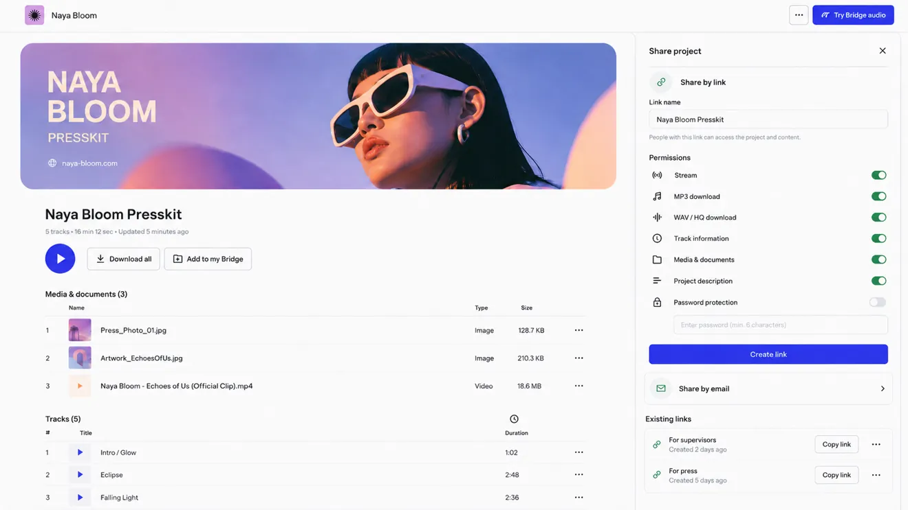
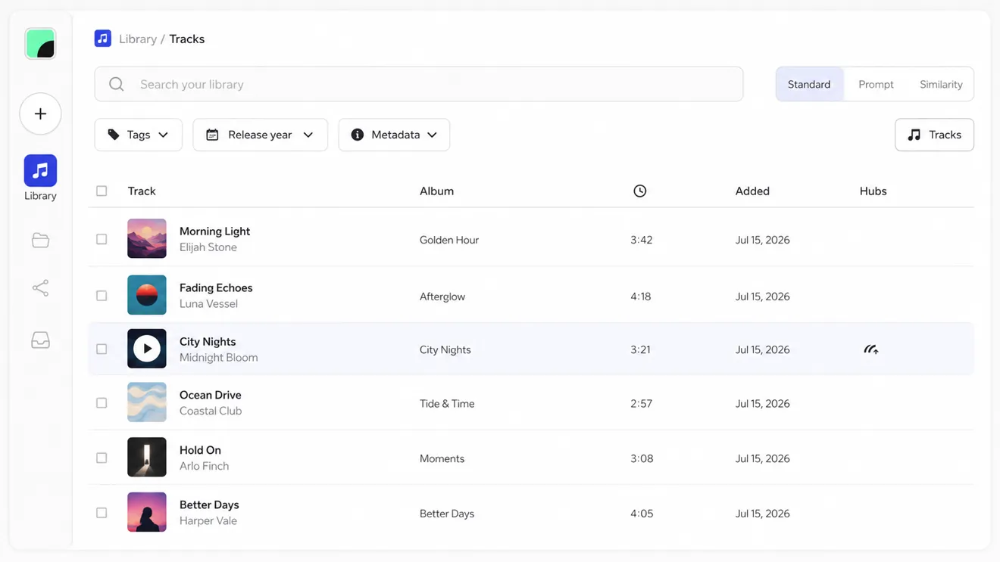
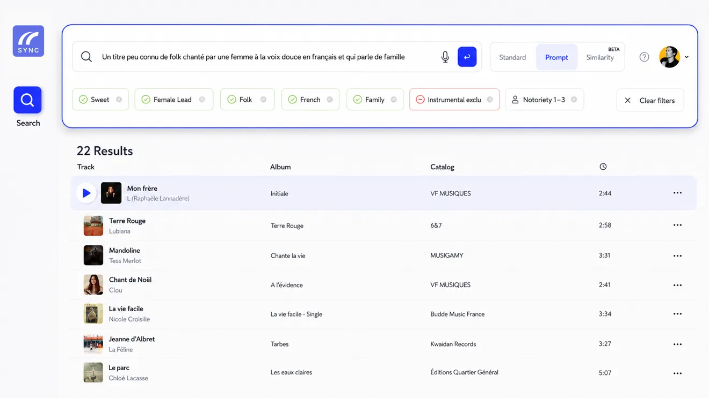

01 · WORKSPACES
Everything your music needs, together.
Demos and finished tracks, metadata, teams, professional sharing and Smart Inbox stay in one clear environment.
Available features vary by plan.
[untitled] excels at creating and refining music in progress. Bridge connects that work to artists, managers, labels, publishers, producers and recipients, whether a track is a demo or finished.
Different strengths: [untitled] goes deeper into creation and versions today; Bridge connects the people and workflows around the music.

A practical side-by-side that gives [untitled] credit for what it does best and shows where Bridge goes further.
Publicly documented capabilities, checked November 2026. Plan limits apply. A missing public feature description does not prove the feature is technically impossible.
From early demos to finished releases, keep music useful to everyone working on it.
Actual Bridge library, with searchable tracks and metadata.
Bridge connects the private Workspace to a specialized professional discovery ecosystem. You can start with organization and sharing, then expand when your catalog is ready.

Demos and finished tracks, metadata, teams, professional sharing and Smart Inbox stay in one clear environment.
Available features vary by plan.

Specialized Hubs connect eligible catalogs with buyers and other music professionals. Bridge Sync is a relevant route for artists seeking sync opportunities.
Optional and subject to plan, eligibility and catalog approval. No guaranteed placement.
The people around a track change as it moves forward. With Bridge, the place stays the same.
[untitled] goes deeper at the first stage, with recording, editing and versions. Bridge keeps every stage and every person in one place.
[untitled] leads for native creation and offline editing. Bridge keeps your professional library and player close, even when you're away from your desk.
On iPhone, adding a web app to the home screen can require multiple browser steps. The visual illustrates the Bridge experience, not a guaranteed one-tap native installation.

Prices alone do not tell the story. [untitled] is compelling for unlimited creative storage; Bridge adds the professional catalog and discovery layer.
[untitled] offers affordable, creator-first editing and unlimited storage on Membership. Bridge adds a broader professional workflow, AI search and optional discovery, with different limits and fees.
Not for every workflow. [untitled] is a strong choice for recording ideas, editing audio, offline listening and managing versions. Bridge.audio is designed for professional catalog management, AI music search, sharing and discovery across the music industry. Some artists may benefit from both.
Bridge.audio offers structured music metadata, AI auto-tagging, Standard, Prompt and Similarity Search on Pro plans, professional collaboration tools, a Smart Inbox and optional exposure on specialized Discovery Hubs.
Yes. Bridge.audio works on mobile through its web app, including browsing, playing and sharing music. It can be added to a home screen where supported. [untitled] has native iOS and Android apps and more built-in creative and offline tools.
Not currently. [untitled] offers track version history today. Bridge.audio versioning is not presented as available in this comparison.
Eligible catalog owners can optionally publish music to specialized Discovery Hubs such as Bridge Sync. Publication depends on plan and eligibility and does not guarantee exposure, a response or a license.
[untitled] Membership is listed at $49.99 per year or $7.99 per month on its web pricing page and includes unlimited uploads; a free Starter plan is also available. Bridge.audio offers a Free plan with 50 tracks and Talent Pro starting at €5 per month with 250 tracks. Prices use different currencies, billing periods and limits, so compare the full package rather than the headline amounts.
Keep making music your way. From the first demo to the finished track, Bridge helps everyone involved organize, share and move it forward.
Publicly documented capabilities and prices checked 23 November 2026. Plan limits apply and prices use different currencies and billing periods. A missing public feature description does not prove that a feature is technically impossible. Unreleased Bridge features, including versioning, are not presented as available.